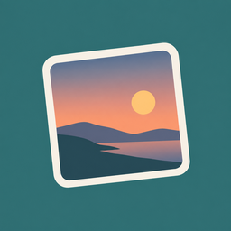
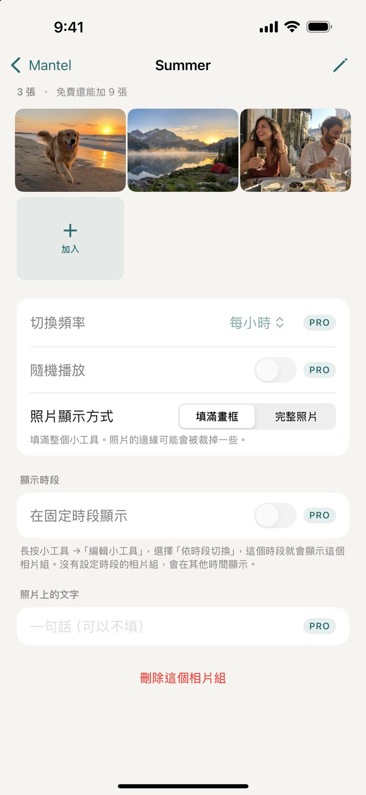

挑幾張照片，就會在小工具中輪流顯示。沒有廣告，不需帳號。
切換頻率、隨機播放與無限照片，來自 Pro, NT$220 — 一次性購買

你的狗、你的朋友、去年夏天—— 就在你每天會看的地方。
使用 Pro，照片可每 15 分鐘、每小時、每 6 小時或每天切換——依序或隨機。免費版為每小時切換。
Pro 的相片組數量與每組照片數都無限制。免費版為一個相片組，最多 12 張照片。達到上限時，已加入的內容絕不會被刪除，只是無法再新增。
沒有廣告。不需帳號。沒有時間限制。
一次性購買，不是訂閱制。
沒有廣告，不用訂閱。Pro 為一次性購買。
所有應用程式
不用訂閱， 沒有廣告，不需帳號。
English · 日本語 · 简体中文 · 繁體中文 · 한국어 · Deutsch · Français · Español · Italiano · Nederlands · Polski · Português · Русский · ไทย · Türkçe · Українська · Tiếng Việt · Bahasa Indonesia